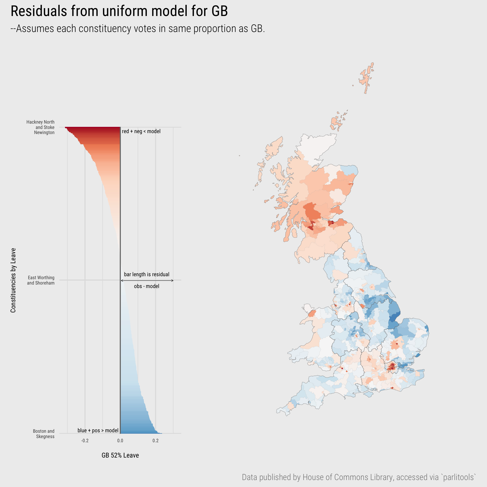
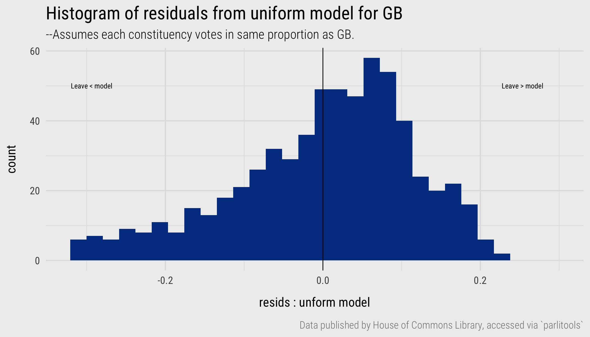
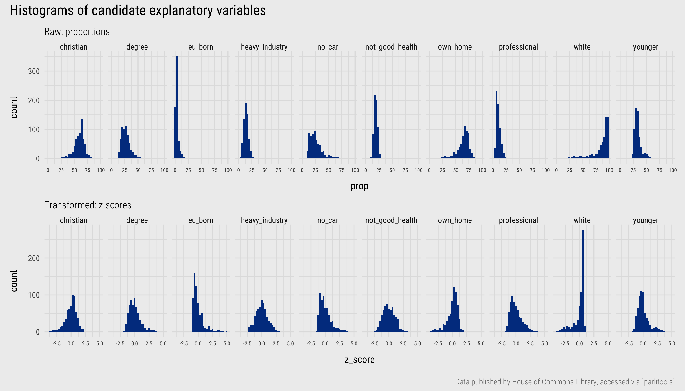
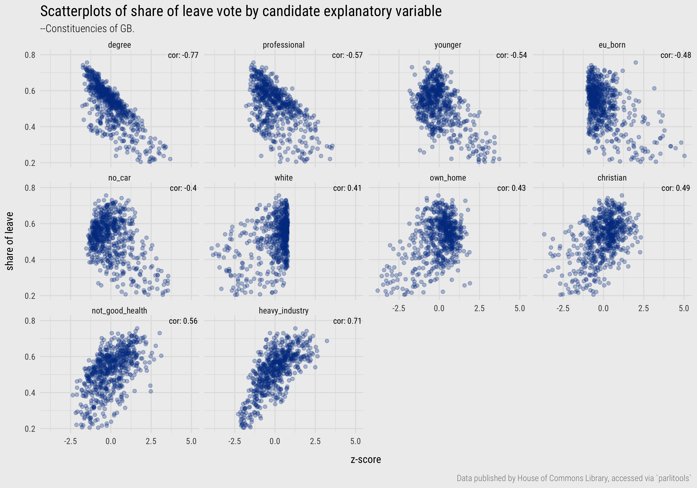
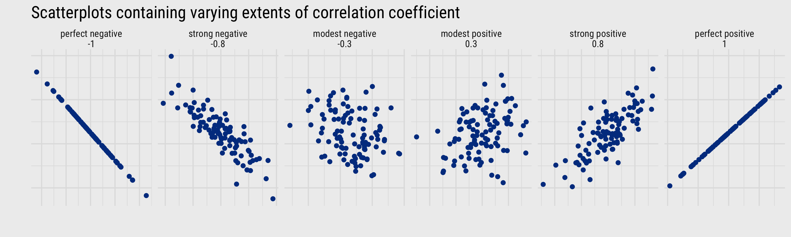
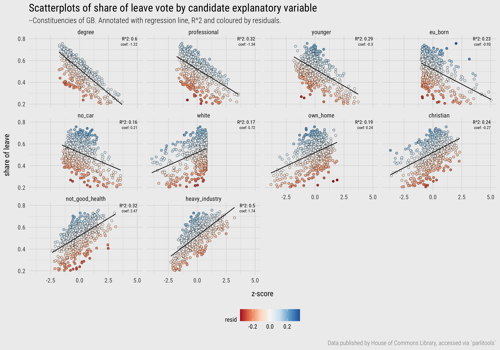
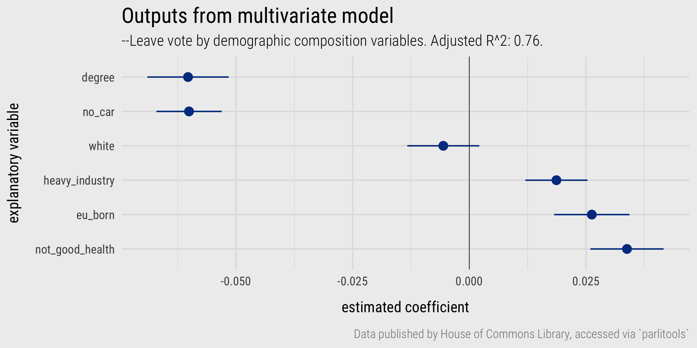

<!DOCTYPE html>
<html lang="en-us" 
      xmlns:og="http://ogp.me/ns#" 
      xmlns:fb="https://www.facebook.com/2008/fbml">

<head>

  <meta charset="utf-8">
  <meta name="viewport" content="width=device-width, initial-scale=1">
  <meta http-equiv="X-UA-Compatible" content="IE=edge">
  
  
  
  <meta name="generator" content="Wowchemy 5.0.0-beta.2 for Hugo">
  

  

  
  

  
  
  
  
  
    
    
    
  
  

  

  
  
  
    
  
  <meta name="description" content="Contents  Session outcomes Introduction Concepts  Quantifying and exploring variation Quantifying and exploring co-variation Modelling for co-variation Extracting and representing model parameters Exploring bias  Techniques  Import Transform Model Tidy models Plot tidy models Plot residuals  Conclusions References   Session outcomes By the end of this session you should gain the following knowledge:
  Be reminded of the basics of linear regression modelling.">

  
  <link rel="alternate" hreflang="en-us" href="../../class/06-class/">

  


  


  
  
    <link rel="preconnect" href="https://fonts.gstatic.com" crossorigin>
  

  
  
  
  <meta name="theme-color" content="#424242">
  

  
  
  
  <script src="../../js/mathjax-config.js"></script>
  

  
  
  
  
    
    
    <link rel="stylesheet" href="https://cdnjs.cloudflare.com/ajax/libs/font-awesome/5.14.0/css/all.min.css" integrity="sha256-FMvZuGapsJLjouA6k7Eo2lusoAX9i0ShlWFG6qt7SLc=" crossorigin="anonymous">
    <link rel="stylesheet" href="https://cdnjs.cloudflare.com/ajax/libs/fancybox/3.5.7/jquery.fancybox.min.css" integrity="sha256-Vzbj7sDDS/woiFS3uNKo8eIuni59rjyNGtXfstRzStA=" crossorigin="anonymous" media="print" onload="this.media='all'">

    
    
    
      
    
    
      
      
        
          <link rel="stylesheet" href="https://cdnjs.cloudflare.com/ajax/libs/highlight.js/10.2.0/styles/github.min.css" crossorigin="anonymous" title="hl-light" media="print" onload="this.media='all'">
          <link rel="stylesheet" href="https://cdnjs.cloudflare.com/ajax/libs/highlight.js/10.2.0/styles/dracula.min.css" crossorigin="anonymous" title="hl-dark" media="print" onload="this.media='all'" disabled>
        
      
    

    

    

    
    
      

      
      

      
    
      

      
      

      
    
      

      
      

      
    
      

      
      

      
    
      

      
      

      
    
      

      
      

      
    
      

      
      

      
    
      

      
      

      
    
      

      
      

      
    
      

      
      

      
    
      

      
      

      
    
      

      
      

      
        <script src="https://cdnjs.cloudflare.com/ajax/libs/lazysizes/5.2.2/lazysizes.min.js" integrity="sha512-TmDwFLhg3UA4ZG0Eb4MIyT1O1Mb+Oww5kFG0uHqXsdbyZz9DcvYQhKpGgNkamAI6h2lGGZq2X8ftOJvF/XjTUg==" crossorigin="anonymous" async></script>
      
    
      

      
      

      
    
      

      
      

      
    
      

      
      

      
        <script src="https://cdn.jsdelivr.net/npm/mathjax@3/es5/tex-chtml.js" integrity="" crossorigin="anonymous" async></script>
      
    
      

      
      

      
    
      

      
      

      
    

  

  
  
  
    
      
      
      <link rel="stylesheet" href="https://fonts.googleapis.com/css?family=Roboto+Condensed:ital,wght@0,300;1,300%7CRoboto+Slab:wght@300%7CFjalla+One&display=swap">
      
    
  

  
  
  
  
  
  <link rel="stylesheet" href="../../css/wowchemy.dd269ef766d14a5f3446f7ad8c8a19cc.css">

  


  

  


  
  

  

  
  <link rel="manifest" href="../../index.webmanifest">
  

  <link rel="icon" type="image/png" href="../../images/icon_huc37306104a4011cad6e5f9118ea6dd2c_187381_32x32_fill_lanczos_center_2.png">
  <link rel="apple-touch-icon" type="image/png" href="../../images/icon_huc37306104a4011cad6e5f9118ea6dd2c_187381_180x180_fill_lanczos_center_2.png">

  <link rel="canonical" href="../../class/06-class/">

  
  
  
  
  
  
  
    
  
  
  <meta property="twitter:card" content="summary_large_image">
  
  <meta property="twitter:site" content="@fcorowe">
  <meta property="twitter:creator" content="@fcorowe">
  
  <meta property="og:site_name" content="Introduction to Geographic Data Science">
  <meta property="og:url" content="/class/06-class/">
  <meta property="og:title" content="Visualization for model building 1: Expose, estimate, evaluate | Introduction to Geographic Data Science">
  <meta property="og:description" content="Contents  Session outcomes Introduction Concepts  Quantifying and exploring variation Quantifying and exploring co-variation Modelling for co-variation Extracting and representing model parameters Exploring bias  Techniques  Import Transform Model Tidy models Plot tidy models Plot residuals  Conclusions References   Session outcomes By the end of this session you should gain the following knowledge:
  Be reminded of the basics of linear regression modelling."><meta property="og:image" content="/media/vis-for-gds.png">
  <meta property="twitter:image" content="/media/vis-for-gds.png"><meta property="og:locale" content="en-us">
  
    
      <meta property="article:published_time" content="2022-06-13T00:00:00&#43;00:00">
    
    <meta property="article:modified_time" content="2022-06-24T22:06:32&#43;01:00">
  

  


  


  


  <link rel="shortcut icon" href="../../favicon.ico" />
  <link rel="apple-touch-icon-precomposed" sizes="57x57" href="../../img/apple-touch-icon-57x57.png" />
  <link rel="apple-touch-icon-precomposed" sizes="114x114" href="../../img/apple-touch-icon-114x114.png" />
  <link rel="apple-touch-icon-precomposed" sizes="72x72" href="../../img/apple-touch-icon-72x72.png" />
  <link rel="apple-touch-icon-precomposed" sizes="144x144" href="../../img/apple-touch-icon-144x144.png" />
  <link rel="apple-touch-icon-precomposed" sizes="120x120" href="../../img/apple-touch-icon-120x120.png" />
  <link rel="apple-touch-icon-precomposed" sizes="152x152" href="../../img/apple-touch-icon-152x152.png" />
  <link rel="icon" type="image/png" href="../../img/favicon-32x32.png" sizes="32x32" />
  <link rel="icon" type="image/png" href="../../img/favicon-16x16.png" sizes="16x16" />
  <meta name="application-name" content="Summer School in Computational Social Science: Introduction to Geographic Data Science" />
  <meta name="msapplication-TileColor" content="#FFFFFF" />
  <meta name="msapplication-TileImage" content="/img/mstile-144x144.png" />


  <title>Visualization for model building 1: Expose, estimate, evaluate | Introduction to Geographic Data Science</title>

</head>


<body id="top" data-spy="scroll" data-offset="70"
    data-target="#TableOfContents"
    >

    


    


<nav class="navbar navbar-expand-lg navbar-light compensate-for-scrollbar" id="navbar-main">
  <div class="container-xl">

    
    <div class="d-none d-lg-inline-flex">
      <a class="navbar-brand" href="../../">Introduction to Geographic Data Science</a>
    </div>
    

    
    <button type="button" class="navbar-toggler" data-toggle="collapse"
            data-target="#navbar-content" aria-controls="navbar" aria-expanded="false" aria-label="">
    <span><i class="fas fa-bars"></i></span>
    </button>
    

    
    <div class="navbar-brand-mobile-wrapper d-inline-flex d-lg-none">
      <a class="navbar-brand" href="../../">Introduction to Geographic Data Science</a>
    </div>
    

    
    
    <div class="navbar-collapse main-menu-item collapse justify-content-end" id="navbar-content">

      
      <ul class="navbar-nav d-md-inline-flex">
        

        

        
        
        
          
        

        

        
        
        
        

        
          
            
            
          
          
        

        <li class="nav-item">
          <a class="nav-link " href="../../syllabus/"><span>Syllabus</span></a>
        </li>

        
        

        

        
        
        
          
        

        

        
        
        
        

        
          
            
            
          
          
        

        <li class="nav-item">
          <a class="nav-link " href="../../schedule/"><span>Schedule</span></a>
        </li>

        
        

        

        
        
        
          
        

        

        
        
        
        

        
          
            
            
          
          
        

        <li class="nav-item">
          <a class="nav-link " href="../../reading/"><span>Reading</span></a>
        </li>

        
        

        

        
        
        
          
        

        

        
        
        
        

        
          
            
            
          
          
        

        <li class="nav-item">
          <a class="nav-link  active" href="../../class/"><span>Class</span></a>
        </li>

        
        

        

        
        
        
          
        

        

        
        
        
        

        
          
            
            
          
          
        

        <li class="nav-item">
          <a class="nav-link " href="../../homework/"><span>Homework</span></a>
        </li>

        
        

        

        
        
        
          
        

        

        
        
        
        

        
          
            
            
          
          
        

        <li class="nav-item">
          <a class="nav-link " href="../../useful/"><span>Useful</span></a>
        </li>

        
        

        

        
        
        
          
            
          
        

        

        
        
        
        

        
          
            
            
          
          
        

        <li class="nav-item">
          <a class="nav-link " href="https://vis-for-gds.slack.com" target="_blank" rel="noopener"><span><i class="fab fa-slack"></i></span></a>
        </li>

        
        

      

        
      </ul>
    </div>

    <ul class="nav-icons navbar-nav flex-row ml-auto d-flex pl-md-2">

      
      

      
      

      
      

      

    </ul>

  </div>
</nav>


    

<div class="container-fluid docs">
    <div class="row flex-xl-nowrap">
        <div class="col-12 col-md-3 col-xl-2 docs-sidebar">
            


  
    
  


<form class="docs-search d-flex align-items-center">
  <button class="btn docs-toggle d-md-none p-0 mr-3" type="button" data-toggle="collapse" data-target="#docs-nav" aria-controls="docs-nav" aria-expanded="false" aria-label="Toggle section navigation">
    <span><i class="fas fa-bars"></i></span>
  </button>

  
</form>

<nav class="collapse docs-links" id="docs-nav">
  

  
  
  
    
  

  
  <div class="docs-toc-item">
    <a class="docs-toc-link" href="../../class/">Overview</a>
    <ul class="nav docs-sidenav">
      
      <li >
        <a href="../../class/">Class sessions</a>
      </li>

      
    </ul>
    

  </div>
  
  <div class="docs-toc-item">
    <a class="docs-toc-link" href="../../class/01-class/">Class</a>
    <ul class="nav docs-sidenav">
      
      <li >
        <a href="../../class/01-class/">1: Introduction</a>
      </li>

      
      <li >
        <a href="../../class/02-class/">2: Data fundamentals</a>
      </li>

      
      <li >
        <a href="../../class/03-class/">3: Visualization fundamentals</a>
      </li>

      
      <li >
        <a href="../../class/04-class/">4: Visualization for exploratory data analysis</a>
      </li>

      
      <li >
        <a href="../../class/05-class/">5: Visualization for exploring spatial networks</a>
      </li>

      
      <li class="active">
        <a href="../../class/06-class/">6: Visualization for model building 1</a>
      </li>

      
      <li >
        <a href="../../class/07-class/">7: Visualization for model building 2</a>
      </li>

      
      <li >
        <a href="../../class/08-class/">8: Visualization for uncertainty analysis</a>
      </li>

      
      <li >
        <a href="../../class/09-class/">9: Visualization for communication and storytelling</a>
      </li>

      
    </ul>
    

  </div>
  
  
</nav>

        </div>

        

        <main class="col-12 col-md-9 col-xl-8 py-md-3 pl-md-5 docs-content" role="main">

            <article class="article">

                <div class="docs-article-container">
                    <h1>Visualization for model building 1: Expose, estimate, evaluate</h1>

                    

                    

                    
                    <div class="due-date p-2 mb-3 bg-secondary text-white">
                        Materials from class on Monday, June 13, 2022
                    </div>
                    

                    <div class="article-style">
                        
<!-- BLOGDOWN-HEAD -->
<script src="../../rmarkdown-libs/header-attrs/header-attrs.js"></script>
<script src="../../rmarkdown-libs/kePrint/kePrint.js"></script>
<link href="../../rmarkdown-libs/lightable/lightable.css" rel="stylesheet" />
<!-- /BLOGDOWN-HEAD -->

<h2>Contents</h2>
<div id="TOC">
<ul>
<li><a href="#session-outcomes">Session outcomes</a></li>
<li><a href="#introduction">Introduction</a></li>
<li><a href="#concepts">Concepts</a>
<ul>
<li><a href="#quantifying-and-exploring-variation">Quantifying and exploring variation</a></li>
<li><a href="#quantifying-and-exploring-co-variation">Quantifying and exploring co-variation</a></li>
<li><a href="#modelling-for-co-variation">Modelling for co-variation</a></li>
<li><a href="#extracting-and-representing-model-parameters">Extracting and representing model parameters</a></li>
<li><a href="#exploring-bias">Exploring bias</a></li>
</ul></li>
<li><a href="#techniques">Techniques</a>
<ul>
<li><a href="#import">Import</a></li>
<li><a href="#transform">Transform</a></li>
<li><a href="#model">Model</a></li>
<li><a href="#tidy-models">Tidy models</a></li>
<li><a href="#plot-tidy-models">Plot tidy models</a></li>
<li><a href="#plot-residuals">Plot residuals</a></li>
</ul></li>
<li><a href="#conclusions">Conclusions</a></li>
<li><a href="#references">References</a></li>
</ul>
</div>

<div id="session-outcomes" class="section level2">
<h2>Session outcomes</h2>
<p>By the end of this session you should gain the following <strong><em>knowledge</em></strong>:</p>
<p><div class="alert alert-objective">
  <div>
    <ul>
<li><input checked="" disabled="" type="checkbox"> Be <strong>reminded</strong> of the basics of linear regression modelling.</li>
<li><input checked="" disabled="" type="checkbox"> <strong>Appreciate</strong> problems of model bias.</li>
</ul>

  </div>
</div>
</p>
<p>By the end of this session you should gain the following <strong><em>practical skills</em></strong>:</p>
<p><div class="alert alert-objective">
  <div>
    <ul>
<li><input checked="" disabled="" type="checkbox"> <strong>Specify</strong> linear regression models in R.</li>
<li><input checked="" disabled="" type="checkbox"> <strong>Extract</strong> model outputs and diagnostics in a <a href="https://vita.had.co.nz/papers/tidy-data.pdf"><code>tidy</code></a> manner.</li>
<li><input checked="" disabled="" type="checkbox"> <strong>Apply</strong> <a href="https://purrr.tidyverse.org/articles/other-langs.html">functional-style programming</a> for working over multiple model outputs.</li>
</ul>

  </div>
</div>
</p>
</div>
<div id="introduction" class="section level2">
<h2>Introduction</h2>
<p>So far the analysis presented in this module has been very data-driven. We have demonstrated how, having <a href="../../class/02-class/">described data</a> in a consistent way, heuristics around <a href="../../class/03-class/">visual approaches and techniques</a> can be applied to usefully expose structure in datasets. The session on <a href="../../class/04-class/">exploratory data analysis</a> involved some model building, but these were largely value-free models derived from contingency tables, based on few prior assumptions.</p>
<p>In the next two sessions we will work on a dataset with a more explicit, and theoretically-informed, motivation. We will explore <em>variation</em> in voting behaviour in the UK’s 2016 referendum on leaving the EU. You might remember that whilst there was a slight majority for Leave (51.9%), the vote varied between different parts of the country. And there were many theories and explanations offered around the time for why particular places voted the way they did – related to the demographic composition of those areas. We will explore whether the sorts of compositional demographic factors discussed – <a href="https://www.theguardian.com/politics/2016/jun/25/left-behind-eu-referendum-vote-ukip-revolt-brexit">left behind places</a> – vary systematically with area-level Leave voting. We will use a regression framework to model the relative effect of each of these compositional factors in structuring variation in the vote and visualization techniques to support estimation of model parameters and evaluation of model bias. Different from the previous sessions, the <a href="../../class/06-class/#concepts-1/">Concepts</a> element is structured more as a narrated data analysis and the <a href="../../class/06-class/#techniques-1/">Techniques</a> element more of a how-to for working with regression models in R.</p>
<p><div class="alert alert-note">
  <div>
    This session assumes some basic familiarity with linear regression modelling. There are entire courses on the topic, so it’s not possible to cover the fundamentals in the next two sessions alone. For a clear and detailed overview, with excellent social science examples, I would recommend <span class="citation">Bartholomew et al. (<a href="#ref-bartholomew_analysis_2008" role="doc-biblioref">2008</a>)</span>.
  </div>
</div>
</p>
</div>
<div id="concepts" class="section level2">
<h2>Concepts</h2>
<div id="quantifying-and-exploring-variation" class="section level3">
<h3>Quantifying and exploring variation</h3>
<p>Variation is central to most data analysis, and certainly regression modelling: quantifying variation, exploring how it is structured and accounting for (or explaining) it using a combination of empirical data and prior theory/knowledge.</p>
<p>In Figure <a href="#fig:map-uniform">1</a> is a map and bar chart displaying total variation in vote shares for Leave in Great Britain (GB), estimated at Parliamentary Constituency level <span class="citation">(see <a href="#ref-hanretty_areal_2017" role="doc-biblioref">Hanretty 2017</a>)</span>. The values themselves are the difference in estimated vote shares from an expectation that the Leave vote for a constituency (<span class="math inline">\(y_{i}\)</span>), our <em>outcome</em> of interest, is the same as the national (GB) average of 51.9% (<span class="math inline">\(\bar{y}\)</span>). Although a slightly contrived formulation, we could express this as an intercept-only linear regression model, where <span class="math inline">\(\beta_{1}\)</span>, the estimated <strong>slope</strong> is ‘turned off’ (takes the value <span class="math inline">\(0\)</span>), and <span class="math inline">\(\beta_{0}\)</span>, the <strong>intercept</strong>, is <span class="math inline">\(\bar{y}\)</span>, the GB average vote share for Leave:</p>
<p><span class="math display">\[\begin{align*}
       y_{i}= \beta_{0} + \beta_{1} + \varepsilon_{i}
\end{align*}\]</span></p>
<p>So we estimate the Leave vote in each constituency (<span class="math inline">\(y_{i}\)</span>) as a function of:</p>
<ul>
<li><span class="math inline">\(\beta_{0}\)</span>, the intercept, the GB average vote share (<span class="math inline">\(\bar{y}\)</span>) <span class="math inline">\(+\)</span></li>
<li><span class="math inline">\(\beta_{1}=0\)</span>, a negated slope, <span class="math inline">\(+\)</span></li>
<li><span class="math inline">\(\varepsilon_{i}\)</span>, a statistical error term capturing the difference between <span class="math inline">\(y_{i}\)</span> (the observed value) and the <em>unobservable</em> <em>true</em> ‘population’ value of the Leave vote in each constituency</li>
</ul>
<p>How does this relate to the idea of characterising variation? The length and colour of each bar in Figure <a href="#fig:map-uniform">1</a> is scaled according to model <strong>residuals</strong>: estimates of the statistical errors (<span class="math inline">\(\hat{\varepsilon}_{i}\)</span>), the difference between <span class="math inline">\(y_{i}\)</span> (the observed value) and the <em>unobservable</em> expected value of the Leave vote in our dataset (<span class="math inline">\(\hat{y}_{i}\)</span>). The sum of these bar lengths (residuals) is therefore the total <strong>variance</strong> <span class="math inline">\((\frac{\sum({y_{i...n}-\bar{y}}^2}{n-1})\)</span> – variance that we later try to reduce, or explain, by updating our regression model to generate new expected values using information on the demographic composition of constituencies.</p>
<p>Figure <a href="#fig:map-uniform">1</a> is similar to the maps that were <a href="https://www.theguardian.com/politics/2016/jun/24/eu-voting-map-lays-bare-depth-of-division-across-britain">published widely in press reports</a> in the aftermath of the vote, and demonstrates that there is indeed substantial variation in Leave voting between different parts of the country. The uniform model consistently underestimates Leave in Scotland and most of London. Outside of this, constituencies voting in smaller proportions than would be expected for Leave are distributed more in pockets around the country: the dark red dot with surrounding red area in the east of the country is Cambridge and Cambridgeshire, constituencies in Bristol (south west), Manchester and Liverpool (north west), Brighton (south), are also reasonably strong red.</p>
<div class="figure" style="text-align: left"><span style="display:block;" id="fig:map-uniform"></span>

<p class="caption">
Figure 1: Residuals from uniform model comparing constituency Leave vote to GB average.
</p>
</div>
<p>When <strong>evaluating</strong> the effectiveness of modelled values, there are various checks that can be performed. An obvious one here is wether there is bias in the residuals – whether they have any underlying structure that suggests that they are grouped in a way not captured by the model. Given the motivation behind our analysis, it is no surprise that there is a geographic pattern to the residuals in Figure <a href="#fig:map-uniform">1</a>, but also a histogram of the residuals (Figure <a href="#fig:hist-uniform">2</a>) shows a slight left skew. There are more constituencies with positive values than negative – the Leave vote is underestimated by the uniform model for 57% of constituencies – and certain constituencies with extreme negative values – the strongest vote for Leave was Boston and Skegness (76%) but the strongest for Remain was Hackney North and Stoke Newington (80%).</p>
<div class="figure" style="text-align: left"><span style="display:block;" id="fig:hist-uniform"></span>

<p class="caption">
Figure 2: Histogram of residuals from uniform model comparing constituency Leave vote to GB average.
</p>
</div>
</div>
<div id="quantifying-and-exploring-co-variation" class="section level3">
<h3>Quantifying and exploring co-variation</h3>
<p>More interesting is whether the pattern of variation in Figure <a href="#fig:map-uniform">1</a> is <em>correlated</em> with compositional factors, <a href="https://www.theguardian.com/news/datablog/2016/jun/24/the-areas-and-demographics-where-the-brexit-vote-was-won">identified in press and other reporting</a> that we think explain this variation; and also whether bias or structure in residuals exists even after accounting for these compositional factors.</p>
<p>In Table <a href="#tab:variables">1</a> is a list of candidate explanatory variables describing the demographic composition of constituencies, selected based on the narrative around ‘left-beind’ places. Each variable is expressed as a proportion of the constituency’s population. So the <em>degree educated</em> variable describes the proportion of residents in the constituency educated at least to degree-level. Comparison across these variables is challenging due to the fact that their ranges differ: the <em>EU-born</em> variable ranges from 0.6% to 17%; the <em>white</em> variable from 14% to 98%. There are also obvious ceilings that limit how successful explanatory variables are likely to be at discriminating variation. Common practice for addressing the range problem is to <a href="https://en.wikipedia.org/wiki/Standard_score">z-score transform</a> the variables, so that each value is expressed in terms of standard deviation units from that variable’s mean, as in Figure <a href="#fig:hist-expl">3</a>.</p>
<table>
<caption>
<span id="tab:variables">Table 1: </span>Selected 2011 Census variables.
</caption>
<thead>
<tr>
<th style="text-align:left;">
Census variable
</th>
</tr>
</thead>
<tbody>
<tr grouplength="4">
<td colspan="1" style="border-bottom: 1px solid;">
<strong>post-industrial / knowlegde economy</strong>
</td>
</tr>
<tr>
<td style="text-align:left;padding-left: 2em;" indentlevel="1">
degree-educated
</td>
</tr>
<tr>
<td style="text-align:left;padding-left: 2em;" indentlevel="1">
professional occupations
</td>
</tr>
<tr>
<td style="text-align:left;padding-left: 2em;" indentlevel="1">
younger adults
</td>
</tr>
<tr>
<td style="text-align:left;padding-left: 2em;" indentlevel="1">
heavy industry
</td>
</tr>
<tr grouplength="4">
<td colspan="1" style="border-bottom: 1px solid;">
<strong>diversity/values/outcomes</strong>
</td>
</tr>
<tr>
<td style="text-align:left;padding-left: 2em;" indentlevel="1">
not good health
</td>
</tr>
<tr>
<td style="text-align:left;padding-left: 2em;" indentlevel="1">
white British/Irish
</td>
</tr>
<tr>
<td style="text-align:left;padding-left: 2em;" indentlevel="1">
Christian
</td>
</tr>
<tr>
<td style="text-align:left;padding-left: 2em;" indentlevel="1">
EU-born (not UK)
</td>
</tr>
<tr grouplength="2">
<td colspan="1" style="border-bottom: 1px solid;">
<strong>metropolitan / ‘big city’</strong>
</td>
</tr>
<tr>
<td style="text-align:left;padding-left: 2em;" indentlevel="1">
own home
</td>
</tr>
<tr>
<td style="text-align:left;padding-left: 2em;" indentlevel="1">
don’t own car
</td>
</tr>
</tbody>
</table>
<div class="figure" style="text-align: left"><span style="display:block;" id="fig:hist-expl"></span>

<p class="caption">
Figure 3: Histograms of candidate explanatory variables measuring demographic composition of constituencies.
</p>
</div>
<p>To explore whether these demographics vary systematically with Leave voting in each constituency, Figure <a href="#fig:scatters">4</a> presents scatterplots from which the extent of linear association can be inferred. Each dot is a constituency, arranged on the x-axis according to value of each candidate explanatory variable and the y-axis according to the share of Leave vote. The scatterplots are faceted by explanatory variable and ordered left-to-right and top-to-bottom according to correlation coefficient. The variable most heavily correlated with Leave voting is that measuring levels of <em>degree</em> education: as the share of a constituency’s population educated at least to <em>degree-level</em> increases, the share of Leave vote in that constituency decreases. An association in the same direction, but to a lesser extent, is observed for variables representing similar concepts: <em>professional occupations</em>, <em>younger adults</em>, <em>EU-born</em>, <em>no-car</em> and the reverse for <em>Christian</em>, <em>not-good health</em> and <em>heavy industry</em>.</p>
<div class="figure" style="text-align: left"><span style="display:block;" id="fig:scatters"></span>

<p class="caption">
Figure 4: Scatterplots of constituency Leave vote against candidate explanatory variables.
</p>
</div>
<p><div class="alert alert-note">
  <div>
    <p>You will remember from introductory stats courses that that the correlation coefficient can be used to summarise the strength of linear association between two variables. It is a quantity that ranges from perfect negative correlation, -1 – as one value increases another decreases in the same proportion – to perfect positive correlation, +1 – as one value increases another increases in the same proportion. A value of 0 indicates no association – the values increase and decrease independently of each other.</p></p>
<div class="figure" style="text-align: left"><span style="display:block;" id="fig:correlations"></span>

<p class="caption">
Figure 5: Scatterplots of synthetic bivariate data with extent of correlation coefficient systematically varied.
</p>
</div>
<p>
  </div>
</div>
</p>
<!-- * To look at this in multivariate space -- PCPs. -->
</div>
<div id="modelling-for-co-variation" class="section level3">
<h3>Modelling for co-variation</h3>
<p>Linear regression provides a framework for explicitly describing these linear associations. The ultimate objective is to quantify how much of the variation in an outcome variable, summarised in Figure <a href="#fig:map-uniform">1</a>, can be explained using information on other variables, the candidate demographic variables in Figure <a href="#fig:scatters">4</a>.</p>
<p>To express this in equation form, we can update the uniform model such that Leave vote is a <em>function</em> of the candidate explanatory variables. For single-variable linear regression, we could update with the proportion of residents educated at least to <em>degree-level</em> (<span class="math inline">\(\textcolor{highlight}{d_{i1}}\)</span>):</p>
<p><span class="math display">\[\begin{align*}
       y_{i}&amp;= \beta_{0} + \beta_{1}\textcolor{highlight}{d_{i1}} + \varepsilon_{i}  \\
\end{align*}\]</span></p>
<p>So we now estimate the Leave vote in each constituency (<span class="math inline">\(y_{i}\)</span>) as a function of:</p>
<ul>
<li><span class="math inline">\(\beta_{0}\)</span>, the intercept, the GB average vote share (<span class="math inline">\(\bar{y}\)</span>) <span class="math inline">\(+\)</span></li>
<li><span class="math inline">\(\beta_{1}=\beta_{1}\textcolor{highlight}{d_{i1}}\)</span>, the slope, indicating in which direction and to what extent <em>degree-educated</em> is associated with Leave, <span class="math inline">\(+\)</span></li>
<li><span class="math inline">\(\varepsilon_{i}\)</span>, the difference between <span class="math inline">\(y_{i}\)</span> (the observed value) and the <em>unobservable</em> true ‘population’ value of the Leave vote in that constituency (statistical error)</li>
</ul>
<p>There are different algorithms that can be used to estimate these parameters. Most obvious is ordinary least squares (OLS), which aims to minimise <span class="math inline">\(\sum{\hat{\varepsilon}_{i...n}}\)</span>, the sum of the (squared) residuals between the observed Leave vote in a constituency, <span class="math inline">\(y_{i}\)</span>, and that expected, <span class="math inline">\(\hat{y_{i}}\)</span>, given the association with the <em>degree-educated</em> explanatory variable <span class="math inline">\(d_{i1}\)</span>.</p>
<p>To explore the associations further, we could update the scatterplots with regression lines, fit via OLS, modelling the Leave vote separately as a linear function of each explanatory variable. As well as the regression line, observations are now coloured according to the size and direction of their residuals. The plots are also annotated according to the coefficient of determination (<span class="math inline">\(R^2\)</span>) – the proportion of the total constituency-level variation in the Leave vote explained by each model formulation. This tells us how much better than the uniform model, which captures the total variation (Figure <a href="#fig:map-uniform">1</a>), is each of the single variable explanatory models.</p>
<p>Colouring dots representing constituencies by residuals is instructive. In most of the scatterplots there seems to be a grouping of large negative residuals (dark red) where, after taking into account the association between Leave voting and demographics across all constituencies in GB, the Leave vote is consistently <em>underrepresented</em>. You might be able to guess at where these are located, certainly generating maps of these residuals may expose whether they are grouped in a particular way.</p>
<div class="figure" style="text-align: left"><span style="display:block;" id="fig:scatters-resids"></span>

<p class="caption">
Figure 6: Scatterplots of constituency Leave vote against candidate explanatory variables, annotated with regression lines.
</p>
</div>
<!-- * Linear regression is termed parametric as the outputs are parameters that summarise relationships: -->
</div>
<div id="extracting-and-representing-model-parameters" class="section level3">
<h3>Extracting and representing model parameters</h3>
<p>It is of course possible, and likely, that some of these variables account for different elements of the variation in the Leave vote than others. You will be aware that the linear regression model can be extended to include many explanatory variables:</p>
<p><span class="math display">\[\begin{align*}
      y_{i}&amp;= \beta_{0} +\beta_{1}x_{i1} + ... + \beta_{k}x_{ik} + \varepsilon_{i}  \\
\end{align*}\]</span></p>
<p>So this results in <em>separate</em> <span class="math inline">\(\beta_{k}\)</span> coefficients for separate explanatory variables. These coefficients can be interpreted as the degree of association between the explanatory variable <span class="math inline">\(k\)</span> and the outcome variable, keeping all the other explanatory variables constant – or the distinct correlation between an explanatory variable <span class="math inline">\(k\)</span> and the outcome variable, net of the other correlated variables.</p>
<p><!-- which allows us to isolate the distinct effect that a single variable has on the outcome. --></p>
<p>In Figure <a href="#fig:plot-outputs">7</a> are regression coefficients (<span class="math inline">\(\beta_{k}\)</span>) from a multiple regression model with <em>degree-educated</em>, <em>no car</em>, <em>white</em>, <em>heavy industry</em>, <em>EU-born</em> and <em>not good health</em> selected as explanatory variables. Coefficients are reported as dots with estimates of uncertainty represented as lines, displaying 95% <a href="http://www.sumsar.net/blog/2013/12/an-animation-of-the-construction-of-a-confidence-interval/">confidence intervals</a>.
<!-- the range of values the true (*unobservable*) coefficient is likely to take --></p>
<p>Most variables’ coefficients are in the direction that would be expected given the associations in Figure <a href="#fig:scatters-resids">6</a>. Net of variation in the other compositional factors, increased levels of <em>degree education</em> in a constituency have the effect of reducing the Leave vote. The two exceptions are <em>EU-born</em> and <em>white</em>: after controlling for variation in the other demographic variables, increased proportions of residents identifying as <em>white</em> has the effect of reducing the Leave vote and increased proportions of residents that are <em>EU-born</em> has the effect of increasing the Leave vote. Since the confidence interval for <em>white</em> crosses zero, this coefficient is subject to much uncertainty. In the next session we will discuss some approaches to exploring whether these sorts of counter-intuitive effects are genuine or as a result of a poorly-specified model.</p>
<div class="figure" style="text-align: left"><span style="display:block;" id="fig:plot-outputs"></span>

<p class="caption">
Figure 7: Output from multiple regression model of Leave vote by demographic composition of constituency.
</p>
</div>
<p><div class="alert alert-note">
  <div>
    <p><strong>Assumptions</strong></p></p>
<p>Again, you might remember that issues of multicollinearity, amongst other things, mean that variable selection in multiple regression requires a little thought. Ideally you want model specifications that are easy to interpret (without variable redundancy) and that explain variation in the outcome reasonably well but reliably. As explanatory variables are added, model fit can increase slightly or substantially, but will never decrease. A common scenario is that a model specified with many explanatory variables fits the data well, but contains coefficients that are inflated in magnitude and that likely vary between different model realisations. These problems are typically addressed in Social Science applications by judicious variable selection and computing coefficient <a href="https://en.wikipedia.org/wiki/Variance_inflation_factor">Variance Inflation Factors</a> (VIF). The variables here were selected using this <em>de facto</em> approach, but see <span class="citation">Beecham, Williams, and Comber (<a href="#ref-beecham_regionally_2020" role="doc-biblioref">2020</a>)</span> for an application of a common machine learning approach to automatic variable selection applied to (almost) the same dataset, and that could be used to explore the sorts of counter-intuitive directions in the coefficients for <em>EU-born</em> and <em>white</em> above.</p>
<p><strong>Estimating uncertainty</strong></p>
<p>Given the spirit of this module, you might have wondered about the reasonably abbreviated discussion of techniques for representing model outputs and their uncertainty estimates (via Confidence Intervals). I am deliberately reserving more involved coverage of this for <a href="">session 08</a>.

  </div>
</div>
</p>
</div>
<div id="exploring-bias" class="section level3">
<h3>Exploring bias</h3>
<p>The multivariate model explains a reasonably large share (c.80%) of the variation in constituency-level Leave voting. However, our analysis becomes more interesting when we start to explore and characterise model <em>bias</em>: any underlying structure to the observations which are better or less-well accounted for by the model. Especially for area-level regression models, it is usual for residuals to contain <a href="https://rspatial.org/raster/analysis/3-spauto.html">spatial autocorrelation</a>. For certain parts of a country, a model will overestimate an outcome given the relationship implied by associations between explanatory and outcome variables; for other parts, the outcome will be underestimated. This might occur due to:</p>
<ul>
<li><em>Spatial dependence</em> in <strong>variable values</strong> over space. We know that the geography of GB is quite socially distinctive, so it is reasonable to expect, for example, the range in variables like <em>heavy industry</em> and <em>white</em> to be bounded to economic regions and metropolitan-peripheral regional contexts.</li>
<li><em>Spatial nonstationarity</em> in <strong>processes</strong> over space. It is possible that associations between variables might be grouped over space – that the associations vary for different parts of the country. For example, high levels of <em>EU-born</em> migration might affect political attitudes, and thus area-level voting, differently in different parts of a country.</li>
</ul>
<p>We can test for and characterise <a href="https://rspatial.org/raster/analysis/3-spauto.html">spatial autocorrelation</a> by performing a graphical inference test. a Map LineUp <span class="citation">(<a href="#ref-beecham_maplineups_2017" role="doc-biblioref">Beecham et al. 2017</a>; <a href="#ref-wickham_inference_2010" role="doc-biblioref">Wickham et al. 2010</a>)</span>, against a null hypothesis of <em>complete spatial randomness</em> in residuals. Graphical LineUp tests are visual equivalents of test statistics. A plot of real data is hidden amongst a set of decoys generated under a null hypothesis. If the real can be correctly identified from the decoys, then this lends statistical credibility to the claim that the observed data are not consistent with the specified null <span class="citation">(<a href="#ref-wickham_inference_2010" role="doc-biblioref">Wickham et al. 2010</a>)</span>. Graphical LineUp tests have been used in various domains, also to test regression assumptions <span class="citation">(<a href="#ref-loy_model_2017" role="doc-biblioref">Loy, Hofmann, and Cook 2017</a>)</span>.</p>
<p>The Map LineUp in Figure <a href="#fig:plot-lineup">8</a>, constructed by randomly permuting observed residuals around constituencies, demonstrates that there <em>is</em> obvious spatial (and <em>regional</em>) autocorrelation in residuals. In the next session, we will cover approaches to dealing with this – accounting for <em>spatial dependence</em> in <strong>values</strong> and exploring <em>spatial nonstationarity</em> in <strong>processes</strong>.</p>
<div class="figure" style="text-align: left"><span style="display:block;" id="fig:plot-lineup"></span>

<p class="caption">
Figure 8: Map LineUp of residuals in which the ‘real’ dataset is presented alongside 8 decoy plots generated by randomly permuting the observed residuals around constituencies.
</p>
</div>
<p><div class="alert alert-note">
  <div>
    <p>In this session, I have focussed mostly on one assumption of linear regression: that of <em>independence of errors (residuals)</em>. Consult <span class="citation">Bartholomew et al. (<a href="#ref-bartholomew_analysis_2008" role="doc-biblioref">2008</a>)</span> for a thorough discussion of these matters, but others not mentioned (and of varying importance) include: <em>linearity</em> in the relationship between outcome and explanatory variables; <em>equal variance</em> and <em>normality</em> in the residuals.</p></p>
<!-- *Normality* in residuals.
* I: The errors are independent—there’s no connection between how far any two points lie from the regression line,
* N: The responses are normally distributed at each level of X, and
* E: The variance or, equivalently, the standard deviation of the responses is equal for all levels of X. -->
<p>
  </div>
</div>
</p>
<!-- https://maczokni.github.io/crimemapping_textbook_bookdown/regression-analysis-a-refresher.html#homework-5 -->
</div>
</div>
<div id="techniques" class="section level2">
<h2>Techniques</h2>
<p>The technical element to this session demonstrates how linear regression models can be specified in R, as well as approaches for extracting model summaries and diagnostics; and of course representing them visually. Data recording estimated vote shares for Leave by Parliamentary Constituency, as well as constituency-level 2011 Census demographics, are available via the <code>parlitools</code> package used in <a href="../../class/03-class/">session 3</a>.</p>
<ul>
<li>Download the <a href="../../homework/06-homework_files/06-template.Rmd"><i class="fab fa-r-project"></i> 06-template.Rmd</a> file for this session and save it to the <code>reports</code> folder of your <code>vis-for-gds</code> project.</li>
<li>Open your <code>vis-for-gds</code> project in RStudio and load the template file by clicking <code>File</code> &gt; <code>Open File ...</code> &gt; <code>reports/06-template.Rmd</code>.</li>
</ul>
<div id="import" class="section level3">
<h3>Import</h3>
<p>The template file lists the required packages: <code>tidyverse</code>, <code>sf</code>, <code>parlitools</code> and also the <code>tidymodels</code> package for extracting model outputs. The required datasets are loaded automatically when <code>library(parlitools)</code> is called. There is code for loading a simplified shapefile representing constituencies and also for extracting the relevant 2011 Census demographics that form explanatory variables in our model.</p>
</div>
<div id="transform" class="section level3">
<h3>Transform</h3>
<p>In the <a href="../../class/06-class/#quantifying-and-exploring-co-variation-1">concepts section</a>, I mentioned that explanatory variables are <a href="https://en.wikipedia.org/wiki/Standard_score">z-score transformed</a>. Here, the distance between observed values for each 2011 Census variable is expressed in standard deviation units from the mean across constituencies for that variable. In the code below, also in the template, <a href="https://dplyr.tidyverse.org/reference/across.html"><code>across()</code></a> is used to apply this formula to each explanatory variable.</p>
<p><code>across()</code> is a really useful <code>dplyr</code> function. The first argument is the set of columns you would like the same function to be applied to and the second is the function you would like to apply. Remembering that <code>mutate()</code> works over columns of a data frame, and that a single column of a dataframe is a vector of values, the notation <code>.x</code> is used to access each element of the vector of values of the columns being worked across.</p>
<pre class="r"><code>explanatory_z_scores &lt;- explanatory %&gt;%
  mutate(
    across(
      c(younger:heavy_industry), ~(.x-mean(.x))/sd(.x)
    )
  )</code></pre>
</div>
<div id="model" class="section level3">
<h3>Model</h3>
<p>Linear models can be fit with the <code>lm()</code> function and coefficients extracted with <code>summary()</code>.</p>
<!-- To specify a linear regression model with a single predictor: -->
<pre class="r"><code>model &lt;- lm(leave ~ degree, data=data_for_models)

summary(model)

# Call:
# lm(formula = leave ~ degree, data = data_for_models)
#
# Residuals:
#      Min       1Q   Median       3Q      Max
# -0.25521 -0.02548  0.01957  0.05143  0.11237
#
# Coefficients:
#               Estimate Std. Error t value Pr(&gt;|t|)
# (Intercept)  0.8044108  0.0097570   82.44   &lt;2e-16 ***
# degree      -0.0106109  0.0003483  -30.46   &lt;2e-16 ***
# ---
# Signif. codes:  0 ‘***’ 0.001 ‘**’ 0.01 ‘*’ 0.05 ‘.’ 0.1 ‘ ’ 1
#
# Residual standard error: 0.07279 on 630 degrees of freedom
# Multiple R-squared:  0.5956,  Adjusted R-squared:  0.595
# F-statistic: 927.9 on 1 and 630 DF,  p-value: &lt; 2.2e-16</code></pre>
</div>
<div id="tidy-models" class="section level3">
<h3>Tidy models</h3>
<p><a href="https://www.tidymodels.org/"><code>tidymodels</code></a>, and specifically the <a href="https://broom.tidymodels.org/"><code>broom</code></a> package, provides a useful set of functions for extracting model outputs in a format that adheres to tidy data <span class="citation">(<a href="#ref-wickham_tidy_2014" role="doc-biblioref">Wickham 2014</a>)</span> – e.g. as a data frame.</p>
<p>Some examples:</p>
<pre class="r"><code># tidy() return estimated coefficients as a data frame
tidy(model)
# # A tibble: 2 x 5
#   term        estimate std.error statistic   p.value
#   &lt;chr&gt;          &lt;dbl&gt;     &lt;dbl&gt;     &lt;dbl&gt;     &lt;dbl&gt;
# 1 (Intercept)   0.804   0.00976       82.4 0.
# 2 degree       -0.0106  0.000348     -30.5 5.67e-126


# glance() returns a single row containing summaries of model fit.
glance(model)
# # A tibble: 1 x 12
#   r.squared adj.r.squared  sigma statistic   p.value    df logLik    AIC    BIC
#       &lt;dbl&gt;         &lt;dbl&gt;  &lt;dbl&gt;     &lt;dbl&gt;     &lt;dbl&gt; &lt;dbl&gt;  &lt;dbl&gt;  &lt;dbl&gt;  &lt;dbl&gt;
# 1     0.596         0.595 0.0728      928. 5.67e-126     1   760. -1514. -1501.
# # … with 3 more variables: deviance &lt;dbl&gt;, df.residual &lt;int&gt;, nobs &lt;int&gt;

# augment() returns a data frame of residuals and predictions (fitted values) for the model realisation.
augment(model)
# # A tibble: 632 x 8
#    leave degree .fitted   .resid    .hat .sigma     .cooksd .std.resid
#    &lt;dbl&gt;  &lt;dbl&gt;   &lt;dbl&gt;    &lt;dbl&gt;   &lt;dbl&gt;  &lt;dbl&gt;       &lt;dbl&gt;      &lt;dbl&gt;
#  1 0.601   16.6   0.628 -0.0269  0.00393 0.0728 0.000270       -0.370
#  2 0.522   27.1   0.517  0.00546 0.00159 0.0729 0.00000447      0.0750
#  3 0.431   29.0   0.497 -0.0662  0.00169 0.0728 0.000703       -0.910
# ...</code></pre>
<p>The advantage of generating model diagnostics and outputs that are tidy, is that this eases the process of working with many model realisations. This is a common requirement for modern data analysis, where statistical inferences are made empirically from resampling.</p>
<p>In Figure <a href="#fig:scatters-resids">6</a>, scatterplots are coloured according to model residuals and annotated with model diagnostics from single-variable linear regression models generated separately for each candidate explanatory variable. These models can be generated with reasonably little code, by making use of <code>broom</code> and a style of <a href="https://adv-r.hadley.nz/fp.html#:~:text=Functional">functional programming</a> in R, which is supported by the <a href="https://purrr.tidyverse.org/"><code>purrr</code></a> package.</p>
<p>Example code:</p>
<pre class="r"><code>single_model_fits &lt;- data_for_models %&gt;%
  pivot_longer(cols=younger:heavy_industry, names_to=&quot;expl_var&quot;, values_to=&quot;z_score&quot;) %&gt;%
  nest(data=-expl_var) %&gt;%  # Nest to generate list-column by expl_var.
  mutate(
    # Use map() to iterate over the list of datasets.
    model = map(data, ~lm(leave ~ z_score, data = .x)),
    # glance() for each model fit.
    fits = map(model, glance),
    # tidy() for coefficients.
    coefs = map(model, tidy),
    # augment() for predictions/residuals.
    values=map(model, augment),
  )

  single_model_fits %&gt;%
    unnest(cols = fits) %&gt;% # unnest output from glance.
    select(-c(data, model)) # remove other list-columns.

# # A tibble: 10 x 15
#    expl_var     r.squared adj.r.squared  sigma statistic   p.value    df logLik    AIC
#    &lt;chr&gt;            &lt;dbl&gt;         &lt;dbl&gt;  &lt;dbl&gt;     &lt;dbl&gt;     &lt;dbl&gt; &lt;dbl&gt;  &lt;dbl&gt;  &lt;dbl&gt;
#  1 younger          0.289         0.288 0.0965      257. 1.05e- 48     1   582. -1158.
#  2 own_home         0.185         0.184 0.103       143. 7.42e- 30     1   539. -1071.
#  3 no_car           0.157         0.155 0.105       117. 3.81e- 25     1   528. -1050.
#  4 white            0.169         0.168 0.104       128. 3.79e- 27     1   532. -1059.
#  5 eu_born          0.233         0.232 0.100       191. 3.42e- 38     1   558. -1110.
#  6 christian        0.238         0.236 0.100       196. 4.95e- 39     1   560. -1114.
#  7 professional     0.320         0.319 0.0944      296. 1.08e- 54     1   596. -1186.
#  8 degree           0.596         0.595 0.0728      928. 5.67e-126     1   760. -1514.
#  9 not_good_he…     0.316         0.315 0.0947      291. 5.93e- 54     1   594. -1182.
# 10 heavy_indus…     0.504         0.503 0.0806      640. 5.43e- 98     1   696. -1385.
# # … with 6 more variables: BIC &lt;dbl&gt;, deviance &lt;dbl&gt;, df.residual &lt;int&gt;, nobs &lt;int&gt;,
# #   coefs &lt;list&gt;, values &lt;list&gt;</code></pre>
<p>Code description (there is a little to get your head around here):</p>
<ol style="list-style-type: decimal">
<li><strong>Setup</strong>: In order to generate separate models for separate explanatory variables, we need to generate <a href="https://cran.r-project.org/web/packages/tidyr/vignettes/nest.html">nested data frames</a>. These data frames are stored in a special type of column (a <code>list-column</code>) in which the values of the column is a list of data frames – in this case one for each explanatory variable that we would like to generate a model over. You can think of parameterising <code>nest()</code> in a similar way to <code>group_by</code>. We first <code>pivot_longer()</code> to generate a data frame where each observation contains the recorded Leave vote for a constituency and its corresponding <code>z_score</code> value for each explanatory variable. There are 10 explanatory variables and so <code>nest()</code> returns a data frame with the dimensions <code>10x2</code> – a variable identifying the explanatory variable on which the model is to be built (<code>expl_var</code>) and a <code>list-column</code>, each element containing a data frame with the dimensions <code>632x7</code>.</li>
<li><strong>Build model</strong>: In <code>mutate()</code>, <code>purrr</code>’s <a href="https://purrr.tidyverse.org/reference/map.html"><code>map()</code></a> function is used to iterate over the list of datasets and fit a model to each nested dataset. The new column <code>model</code> is a <code>list-column</code> this time containing a list of model objects.</li>
<li><strong>Generate outputs</strong>: Next, the different model outputs can be generated using <code>glance(), tidy(), augment()</code>, with <code>map()</code> to iterate over the list of model objects. The new columns are now <code>list-columns</code> of data frames containing model outputs.</li>
<li><strong>Extract outputs</strong>: Finally, we will want to variously extract the values from these nested data. This can be achieved using <code>unnest()</code>and supplying to the <code>cols</code> argument the names of the <code>list-columns</code> that we want to flatten over. </li>
</ol>
</div>
<div id="plot-tidy-models" class="section level3">
<h3>Plot tidy models</h3>
<p>In Figure <a href="#fig:scatters-resids">6</a> estimated regression coefficients are plotted for a multivariate linear regression model. The <code>ggplot</code> specification is reasonably straightforward.</p>
<p>The code:</p>
<pre class="r"><code>model &lt;- lm(leave ~ degree  + eu_born + white  + no_car + christian +
       not_good_health + heavy_industry, data=data_for_models)
outputs &lt;- tidy(model)
outputs %&gt;%
  filter(term != &quot;(Intercept)&quot;) %&gt;%
  ggplot(
    aes(x=reorder(term, -estimate),
        y=estimate,ymin=estimate-1.96*std.error, ymax=estimate+1.96*std.error)) +
  geom_pointrange() +
  coord_flip()</code></pre>
<p>The plot specification:</p>
<ol style="list-style-type: decimal">
<li><strong>Data</strong>: A data frame of model coefficients extracted from the multivariate model object using <code>tidy()</code>.</li>
<li><strong>Encoding</strong>: y-position varies according to the size of the coefficient estimate and the 95% confidence intervals, defined using <code>ymin</code> and <code>ymax</code>.</li>
<li><strong>Marks</strong>: <code>geom_pointrange()</code>, which understands <code>ymin</code> and <code>ymax</code>, for the dots with Confidence Intervals</li>
<li><strong>Setting</strong>: <code>coord_flip()</code> to make variable names easier to read.</li>
</ol>
</div>
<div id="plot-residuals" class="section level3">
<h3>Plot residuals</h3>
<p>In order to explore spatial autocorrelation in residuals, we used a Map LineUp test <span class="citation">(<a href="#ref-beecham_maplineups_2017" role="doc-biblioref">Beecham et al. 2017</a>; <a href="#ref-wickham_inference_2010" role="doc-biblioref">Wickham et al. 2010</a>)</span>. Using the sorts of functional programming techniques mentioned above, these tests are actually reasonably straightforward to construct.</p>
<p>First generate a model object and extract residuals from it, again making use of <code>nest()</code>, <code>map()</code> and <code>tidy()</code>:</p>
<pre class="r"><code># Generate model object and extract residuals
model_values &lt;- data_for_models %&gt;%
  mutate(type=&quot;full_dataset&quot;,) %&gt;%
  nest(data=-type) %&gt;%
  mutate(
    model=map(data, ~lm(leave ~ degree  + eu_born + white  + no_car + christian +
                          not_good_health + heavy_industry, data=.x)),
    values=map(model, augment),
    resids=map(values, . %&gt;% select(.resid))
  ) %&gt;%
  unnest(cols = c(data, resids)) %&gt;%
  select(-model)
# Store max value of residuals for setting limits in map colour scheme.
max_resid &lt;- max(abs(model_values$.resid))</code></pre>
<p>Next, create a function that generates in this case nine permutations of the same dataset. I am deliberately not discussing this in too much detail, but you might notice that each permutation is stored in separate columns and is generated using <a href="http://www.rexamples.com/14/Sample()"><code>sample()</code></a> with one permutation randomly held back – this represents the <em>real</em> dataset.</p>
<pre class="r"><code># Function for generating random permutations + one real.
do_lineup &lt;- function(data, col_offset) {
  real &lt;- sample(1:9,1)
  for(i in 1:9) {
    if(i==real) {
      data &lt;- cbind(data, data$value)
      colnames(data)[i+col_offset] &lt;- paste0(&quot;permutation&quot;, i)
    }
    else {
      permutation &lt;- sample(data$value,nrow(data))
      data &lt;- cbind(data, permutation)
      colnames(data)[i+col_offset] &lt;- paste0(&quot;permutation&quot;, i)
    }
  }
  return(data %&gt;% select(-value) %&gt;% mutate(real=paste0(&quot;permutation&quot;, real)))
}</code></pre>
<p>The permutations are simply constituency names that are randomly shuffled (permuted). To add residuals data to these, we again make use of <code>nest()</code> to generate a <code>list-column</code> of randomly permuted constituencies, and then for each permutation add a new column bringing in the residuals values from the <code>model_values</code> data frame that is <em>not</em> randomly permuted.</p>
<pre class="r"><code># Create the lineup data: swaps for constituencies
lineup_permutations &lt;- do_lineup(model_values %&gt;% select(value=ons_const_id) %&gt;% unique, 1) %&gt;%
  pivot_longer(cols=(permutation1:permutation9),names_to=&quot;perm&quot;, values_to=&quot;area_name&quot;) %&gt;%
  arrange(perm)

lineup_data &lt;- lineup_permutations %&gt;%
  nest(data=-perm) %&gt;%
  mutate(
    resids=map(data, ~model_values %&gt;% select(.resid))
  ) %&gt;%
  unnest(c(data, resids))</code></pre>
<p>Finally, plot choropleths in the usual way, faceting according to the permutation variable <code>perm</code> in <code>lineup_data</code>:</p>
<pre class="r"><code>cons_outline %&gt;%
  inner_join(lineup_data, by=c(&quot;pcon19cd&quot;=&quot;area_name&quot;)) %&gt;%
  ggplot() +
  geom_sf(aes(fill=.resid), colour=&quot;#757575&quot;, size=0.001)+
  coord_sf(crs=27700, datum=NA) +
  facet_wrap(~perm, ncol=5) +
  scale_fill_distiller(palette=&quot;RdBu&quot;, direction=1,
                       limits=c(-max_resid, max_resid))</code></pre>
<!--  * Models as functions
* Vocabulary: outcome variable (whose variation you are trying to understand), explanatory (other variables that you want to use to explain variation), predicted value (output o the model function -- expected outcome conditioing on explanatory variables), residuals (a measure of how far each case is from the predicted value)

Why models and not graphics
* Can reveal patterns that not evident in graphics -- in regression framework we can *condition* on explanatory variables and talk about the effect of single variables net of others.
* Deal with uncertainty and false discovery -- we infer/overinterpet from scatterplots

* https://wilkelab.org/SDS375/
* https://mjskay.github.io/ggdist/articles/freq-uncertainty-vis.html
Use tidymodels : https://cfss.uchicago.edu/notes/start-with-models/  -->
</div>
</div>
<div id="conclusions" class="section level2">
<h2>Conclusions</h2>
<p>Variation is central to most data analysis, and certainly regression modelling: quantifying variation, exploring how it is structured and accounting for (or explaining) it using a combination of data and prior theory/knowledge. This session introduced a linear regression modelling framework with the explicit aim of analysing whether variation in constituency-level voting in the UK’s 2016 EU Referendum varies systematically with the demographic composition of constituencies. Visual approaches were used to explore associations between constituency-level voting and demographics and also to characterise bias in the specified models – to identify potential (geographic and regional) groupings that our models ignore.</p>
</div>
<div id="references" class="section level2 unnumbered">
<h2>References</h2>
<div id="refs" class="references csl-bib-body hanging-indent">
<div id="ref-bartholomew_analysis_2008" class="csl-entry">
Bartholomew, David J., Fiona Steele, J Galbraith, and Irini Moustaki. 2008. <em>Analysis of Multivariate Social Science Data</em>. London, <span>UK</span>: CRC Press.
</div>
<div id="ref-beecham_maplineups_2017" class="csl-entry">
Beecham, R., J. Dykes, W. Meulemans, A. Slingsby, C. Turkay, and J. Wood. 2017. <span>“Map Line-Ups: Effects of Spatial Structure on Graphical Inference.”</span> <em><span>IEEE</span> Transactions on Visualization &amp; Computer Graphics</em> 23 (1): 391–400.
</div>
<div id="ref-beecham_regionally_2020" class="csl-entry">
Beecham, R., N. Williams, and L. Comber. 2020. <span>“<span class="nocase">Regionally-structured explanations behind area-level populism: An update to recent ecological analyses</span>.”</span> <em><span>PLOS One</span></em> 15 (3): e0229974.
</div>
<div id="ref-hanretty_areal_2017" class="csl-entry">
Hanretty, C. 2017. <span>“Areal Interpolation and the UK’s Referendum on EU Membership.”</span> <em>Journal of Elections, Public Opinion and Parties</em> 37 (4): 466–83.
</div>
<div id="ref-loy_model_2017" class="csl-entry">
Loy, A., H. Hofmann, and D. Cook. 2017. <span>“Model Choice and Diagnostics for Linear Mixed-Effects Models Using Statistics on Street Corners.”</span> <em>Journal of Computational and Graphical Statistics</em> 26 (3). Taylor &amp; Francis: 478–92. doi:<a href="https://doi.org/10.1080/10618600.2017.1330207">10.1080/10618600.2017.1330207</a>.
</div>
<div id="ref-wickham_tidy_2014" class="csl-entry">
Wickham, H. 2014. <span>“Tidy Data.”</span> <em>Journal of Statistical Software</em> 59 (10): 1–23.
</div>
<div id="ref-wickham_inference_2010" class="csl-entry">
Wickham, H., D. Cook, H. Hofmann, and A. Buja. 2010. <span>“Graphical Inference for Infovis.”</span> <em>IEEE Transactions on Visualization and Computer Graphics (Proc. InfoVis ’10)</em> 16 (6): 973–79.
</div>
</div>
</div>

                    </div>

                    


                    
                </div>

                <div class="body-footer">
                    <p> Fri, 24 Jun 2022</p>

                    


                    


                </div>

            </article>

            <footer>
    <hr>

    <div class="row course-info">
        <div class="col-md-7">
            <p>
                <strong>Summer School in Computational Social Science: Introduction to Geographic Data Science (July 2022)</strong><br>

                <a href="https://www.liverpool.ac.uk" target="_blank" rel="noopener">University of Liverpool</a> &emsp;&emsp;
                <a href="https://www.liverpool.ac.uk/geography-and-planning/" target="_blank" rel="noopener">School of Geography and Planning</a>
            </p>

            <p>
                <a href="http://www.franciscorowe.com/" target="_blank" rel="noopener"><i class="fas fa-user"></i>
                    Francisco Rowe</a> &emsp;&emsp;
                <a href="mailto:f.rowe-gonzalez@liverpool.ac.uk"><i class="fas fa-envelope"></i>
                    f.rowe-gonzalez@liverpool.ac.uk</a>
            </p>

            <p>
                <i class="far fa-calendar-alt"></i> 1 &emsp;&emsp;
                <i class="far fa-clock"></i> TBC <br>
                <i class="fas fa-university"></i> Groningen, The Netherlands
            </p>
        </div>

        <div class="col-md-5 credits">
            <p>All content licensed under a <a href="https://creativecommons.org/licenses/by-nc-sa/4.0/" target="_blank" rel="noopener">Creative Commons Attribution-NonCommercial-NoDerivatives 4.0 International License</a>.</p>
            
            <p>Content <i class="fab fa-creative-commons"></i> 2022 <a href="http://www.franciscorowe.com/" target="_blank" rel="noopener">Francisco Rowe</a></p>                    
            
            <p><a href="https://github.com/fcorowe/intro-gds" target="_blank" rel="noopener"><i class="fab fa-github"></i> View the source at GitHub.</a></p>
        </div>
    </div>
</footer>


        </main>
    </div>
</div>

        

    
    
    
      <script src="https://cdnjs.cloudflare.com/ajax/libs/jquery/3.5.1/jquery.min.js" integrity="sha256-9/aliU8dGd2tb6OSsuzixeV4y/faTqgFtohetphbbj0=" crossorigin="anonymous"></script>

      
      
        <script src="https://cdnjs.cloudflare.com/ajax/libs/jquery.imagesloaded/4.1.4/imagesloaded.pkgd.min.js" integrity="sha256-lqvxZrPLtfffUl2G/e7szqSvPBILGbwmsGE1MKlOi0Q=" crossorigin="anonymous"></script>
        <script src="https://cdnjs.cloudflare.com/ajax/libs/jquery.isotope/3.0.6/isotope.pkgd.min.js" integrity="sha256-CBrpuqrMhXwcLLUd5tvQ4euBHCdh7wGlDfNz8vbu/iI=" crossorigin="anonymous"></script>
      

      <script src="https://cdnjs.cloudflare.com/ajax/libs/fancybox/3.5.7/jquery.fancybox.min.js" integrity="sha256-yt2kYMy0w8AbtF89WXb2P1rfjcP/HTHLT7097U8Y5b8=" crossorigin="anonymous"></script>
      <script src="https://cdnjs.cloudflare.com/ajax/libs/instant.page/5.1.0/instantpage.min.js" integrity="sha512-1+qUtKoh9XZW7j+6LhRMAyOrgSQKenQ4mluTR+cvxXjP1Z54RxZuzstR/H9kgPXQsVB8IW7DMDFUJpzLjvhGSQ==" crossorigin="anonymous"></script>

      

      
        
        <script src="https://cdnjs.cloudflare.com/ajax/libs/highlight.js/10.2.0/highlight.min.js" integrity="sha512-TDKKr+IvoqZnPzc3l35hdjpHD0m+b2EC2SrLEgKDRWpxf2rFCxemkgvJ5kfU48ip+Y+m2XVKyOCD85ybtlZDmw==" crossorigin="anonymous"></script>
        
        <script src="https://cdnjs.cloudflare.com/ajax/libs/highlight.js/10.2.0/languages/r.min.js"></script>
        
      

    

    
    

    
    
    <script src="https://cdnjs.cloudflare.com/ajax/libs/anchor-js/4.2.2/anchor.min.js" integrity="sha512-I7w3ZdSFzw5j3jU3ZkNikBNeIrl3i+hEuEdwNmqUJvwNcaBUNcijnP2gd9DtGlgVYDplfjGoD8vTNsID+lCjqg==" crossorigin="anonymous"></script>
    <script>
      anchors.add();
    </script>
    

    

    
    

    
    
    

    
    
    

    
    

    
    

    
    

    
    
    
    
    
    
    
    
    
    
    
    <script src="../../en-uk/js/wowchemy.min.abf0df1802927998e37dcf3cf6aa05de.js"></script>

    


    
    

    
<div id="modal" class="modal fade" role="dialog">
  <div class="modal-dialog">
    <div class="modal-content">
      <div class="modal-header">
        <h5 class="modal-title"></h5>
        <button type="button" class="close" data-dismiss="modal" aria-label="Close">
          <span aria-hidden="true">&times;</span>
        </button>
      </div>
      <div class="modal-body">
        <pre><code class="tex hljs"></code></pre>
      </div>
      <div class="modal-footer">
        <a class="btn btn-outline-primary my-1 js-copy-cite" href="#" target="_blank">
          <i class="fas fa-copy"></i> 
        </a>
        <a class="btn btn-outline-primary my-1 js-download-cite" href="#" target="_blank">
          <i class="fas fa-download"></i> 
        </a>
        <div id="modal-error"></div>
      </div>
    </div>
  </div>
</div>

</body>

</html>
